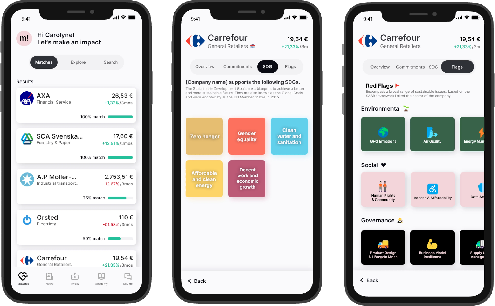

Where we started
So when I first started at make!mpact, there already was an app. The app had most of the functionalities it has today, but it really missed some of the "make!mpact vibe". The app was very black on white, and without much to treat the users. So the first part of this task was to start prototyping, and coming up with new design ideas.